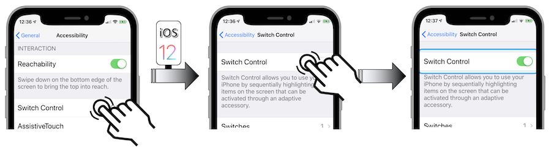

How to test the iOS accessibility
ALL the project members should know the iOS accessibility features introduced in this site to make a perfect link between the app implementations and the users needs.
Each one of these features should be seen as an important human-made element for the user comfort and not just a functional one.
Whatever the design, implementation or testing area, every decision must be particularly empathetic to provide the best user experience.
An accessible product is a high-quality productWWDC 2023 - Perform Accessibility Audits For Your App (watch the video)
Fundamental prerequisites #
-
Spend as much time as necessary to perfectly control the gestures (VoiceOver user guide, Switch Control).
-
Watch the examples provided by the WWDC (Apple Worldwide Developers Conference) videos.
-
Assimilate the design criteria to be sure that you're following the appropriate working path.
-
Create as many blank projects as needed to test a dedicated feature and be sure that it's working before introducing inside the final app coding global environment.
-
Be sure that the third-party elements or the web contents that may be parts of the application are themselves already perfectly accessible.
Working environment #
Four different groups may be described as parts of every project:
-
The person in charge of defining the priorities of every functionality must know the app users needs so as to accurately define the functionalities acceptance criteria and be able to check himself the desired achievement.
-
The DESIGN team must put itself in the user's shoes to provide recommendations as accurate as possible according to the project demands upstream.
-
The DEVELOPMENT team must rely heavily on the WWDC videos and the iOS developers guide in order to find the most appropriate solutions.
-
The TEST team must perfectly control the dedicated gesture and understand every iOS accessibility feature to optimally perform every test before starting production.
Whatever the way you want to work (SCRUM...), all the functions described above must be present in a project.
Foresee two ways of evaluation in order to make sure that the iOS accessibility recommendations have been well implemented:
-
FUNCTIONAL: the user navigation among the screens must be hassle-free and provide all visual information without questions to be asked: simple, clear and fluid.
-
TECHNICAL: the technical compliance of some elements must be checked (colours contrast, icons size...) while creating code tests.
Sometimes, this mode also confirms and solves any functional problems.
Functional review #
There's no need in having technical knowledge for this part but (de)activate and use iOS accessibility features.
Besides the design criteria to be followed, it's crucial to be sure that the accessibility options activated by a user are operational in the whole application.
Few important criteria to be imperatively tested are introduced hereunder:
-
Screen orientation: it's highly recommended to implement the landscape and portrait modes.
When implemented, this functionality must be checked for each page of the application. -
Reduce motion: because visual movements may give rise to problems (nausea...) for some people, it's imperative to check the user settings dealing with animations.
-
Reduce transparency: blurring effects may give rise to sighting difficulties for people having visual impairments.
These effects can be weakened by the system thanks to an accessibility option that must be checked in every page it occurs. -
Dark mode: the result of this iOS 13 feature must be checked out to ensure the conformity of the different color contrasts: the increase contrast accessibility option must also be verified in this context.
Besides these basic criteria, there are also fundamental requirements for an accessible application:

Dynamic Type #
To understand how this feature works, it's highly recommended to watch the example in this WWDC 2017 video that is detailed in the WWDC part of this site.
Tests should be made with devices having different screen sizes in order to imperatively check every page.
Three zoom levels must be particularly scanned to determine the visual behavior at extremes:
-
Lowest threshold WITHOUT accessibility.
-
Highest threshold WITHOUT accessibility.
-
Highest threshold WITH accessibility.

The following points must be thoroughly checked:
- The truncation '...' mustn't be used and should be replaced by a hyphen at the end of the sentence.

-
Illustration and icon sizes must be adapted to the magnification: use of the Large Content Viewer feature, a two fingers pinch implementation to avoid the
Zoomnative feature trigger or only a graphical element magnification are possible solutions according to the context. -
Change the text sizes in every screen to ensure that all the elements perfectly meet the graphical contraints.
-
As soon as a corrected fault is effective, it must be checked for every device used for tests to be sure of its definitive rectification.
All these tests are quite long to be performed because every screen is impacted with different devices including the changing of the text size inside each one of them.
My biggest tip is to think about these early on in the design process.WWDC 2020 - Make Your App Visually Accessible (watch the video)
VoiceOver #
The iOS native screen reader activation drastically changes the visual behavior obtained with the common gestures, that's why its control takes a little while.
It's highly recommended to know the basic gestures before activating this feature in the device user settings.

Don't believe that every element must be absolutely vocalized one after another: that's definitely the proper way to get a VoiceOver implementation that is anything but effective!
Keep in mind that the visual information is assimilated very quickly while the screen reader sequentially provides this information at the speed of successive selections of elements: a huge effort is necessary to get a synoptic vision of the screen and really understand what's offered.
To better deal with this situation, it's recommended to keep on navigating with the curtain screen mode that's particularly very useful for the tests of an unknown application because no human-made memorized information from a previous browsing will be provided.
Besides the design criteria to be followed, four main principles must be kept in mind when testing:
-
The visual information must be vocally transcribed.
-
The user must always know where he is and where he can go.
-
The user's navigation must he hassle-free, clear and fluid.
-
The number of element selections must be as small as possible.
All these tests are quite long to be performed and they require a strong empathy to suggest constructive criticism of the vocally VoiceOver information.
Morevover, if the screen reader isn't implemented yet, it's essential to inform the user about this situation once the application icon is selected so as to avoid disappointement and possible frustration.
Switch Control #
The accessibility Switch Control feature revolves around the point mode and the item mode.

The element selection using the item mode works fine when the user interface isn't too complicated and uses native elements.
However, this mode may not be helpful according to the rationale behind some specific use cases and then needs to be customized.
In this case, the feedback information provided by the tests must be as helpful as getting the best user experience.
Note: this feature can be (de)activated in the device user settings.



Technical review #
The use of this section requires more or less special expertise according to what must be checked.
Colour contrast #
The colour contrast is certainly the easiest point to be checked thanks to softwares (Colour Contrast Analyzer...).
Since Xcode 11, the Accessibility Inspector tool provides a specific Color Contrast Calculator feature that reaches the same purpose.
It's also crucial to take into account the brightness difference (value > 125) and the colour difference (value > 500) as described in the design criteria section dealing with colours.
Code review #
The Xcode IDE contains a very interesting tool entitled Accessibility Inspector.
Its goal and way of being used won't be developed here because they're perfectly explained in these detailed videos:
... that are highly recommended to be watched.
Code testing #
Many kinds of tests (unit tests...) may be set up by the developers in order to maintain a stable and reliable code over time.
These good practice ensure functional continuity by being informed of any deviation introduced in subsequent developments.
Take a look at the Perform accessibility audits for your app video if further information are necessary to include automation elements in your tests for instance.